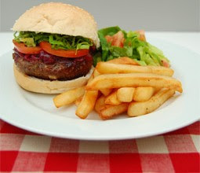
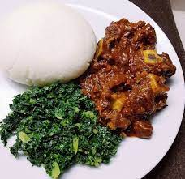

Our History Our Menu Book Reservation
|  |
|---|
| A meat pattie filled with flavour and condomants with chips on the side, probably with salad or vegetables on the side too, this is one of our best dishes that you can eat with a knife and fork sitting down in the restaurant. It will be listed on the menu as burger and chips. A meat pattie in a bun. This is a snack that you can even walk about eating, or eat sitting down in a snack bar. |
|
| Our most prized dish, the rice and chicken, sounds simple but with our sauces and spices fill up the chicken with immense flavour and the rice cooked to perfection glazzed with our secret sauce soup makes the dish more flavourful and dynamic. This is one of our best dishes that will milk your taste buds making you want more |
|  |
| Yes, we also offer our traditional Zimbabwean sadza with fried veggie rape and stewed beef moxed with our sweet sauce and onions and veggies. It brings back the memories and reminds us of our Zimbabewan culture. this dish is a sweet zimbabwean delicasy and it can also be alternated with chicken or goat meat. Taste just like home! |